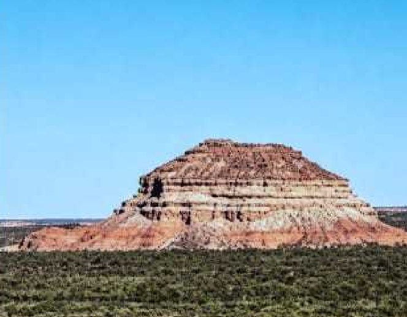
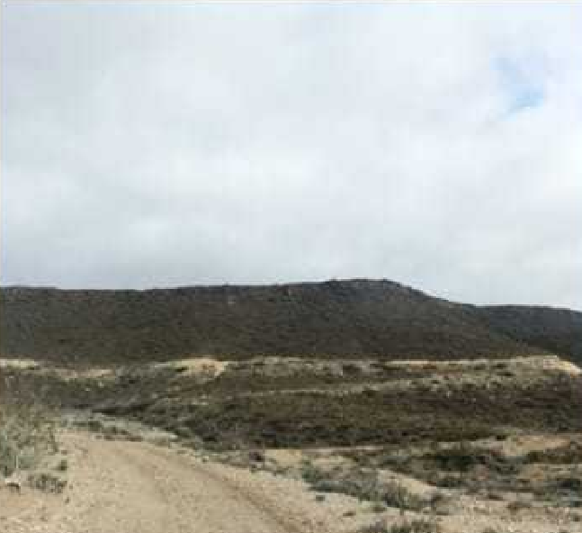
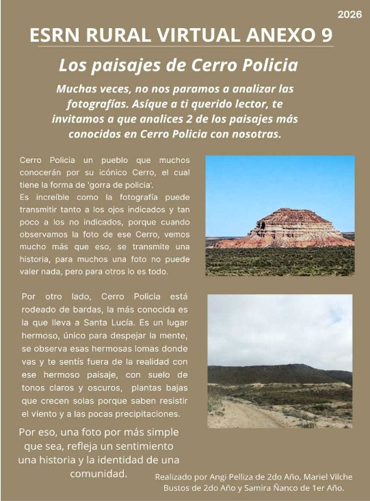

Muchas veces, no nos paramos a analizar las fotografías. Así que a ti, querido lector, te invitamos a que analices dos de los paisajes más conocidos en Cerro Policía con nosotras.
El icónico Cerro Policía
Cerro Policía es un pueblo que muchos conocerán por su icónico cerro, el cual tiene la forma de “gorra de policía”. Es increíble cómo la fotografía puede transmitir tanto a los ojos indicados y tan poco a los no indicados; cuando observamos la foto de ese cerro, vemos mucho más que eso: se transmite una historia. Para muchos una foto no puede valer nada, pero para otros lo es todo.

Las bardas y el entorno natural
Por otro lado, Cerro Policía está rodeado de bardas, y la más conocida es la que lleva a Santa Lucía. Es un lugar hermoso, único para despejar la mente. Se observan esas hermosas lomas donde vas y te sentís fuera de la realidad con ese hermoso paisaje, con suelo de tonos claros y oscuros, y plantas bajas que crecen solas porque saben resistir el viento y a las pocas precipitaciones.

Por eso, una foto, por más simple que sea, refleja un sentimiento, una historia y la identidad de una comunidad.
El artículo original
